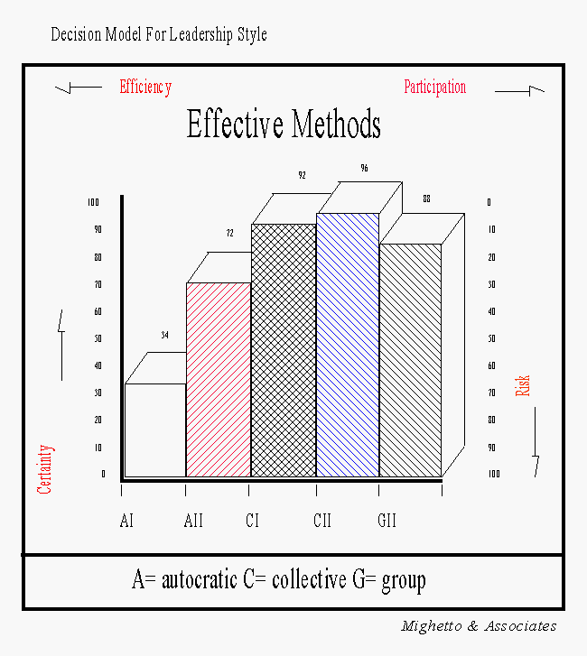
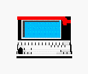

Hello, World!
Hello, World2
The decision maker may postpone a decision to gather more information or
to get assistance from others or to review the situation. When a decision
is made it is through one of five methods. Methods a1 and aII are
autocratic in nature; gII is democratic; and c1 and cII are consultative
in nature. The decison maker may refuse to decide or attempt to delegate
in situations where the risk of failure is high. A definition of each
method and the relationship between
risk, certainty, efficiency and participation in an
unknown situation are provided below. The first autocratic style is described as follows: The leader solves the problem or makes the decision using information available to the leader at the time.
The second autocratic style is: The leader obtains the necessary information from team members, then decides the solution. The leader may or may not tell team members what the problem is in getting information from them. The role played by team members in making the decision is one of providing the necessary information to the leader rather than generating or evaluating alternative solutions.
The first consultative (also called collective) leadership style is: The leader shares the problem with the relevant team members individually getting their ideas and suggestions without bringing them together as a group. Then the leader makes the decision that may or may or reflect team member influence.
The second consultative leadership style is: The leader shares the problem with the relevant team members as a group, obtaining their collective ideas and suggestions. Then the leader makes the decision that may or may not reflect team member influence.
The democratic (also called group) leadership style is: The leader shares the problem with the relevant team members as a group. Together they generate and evaluate alternatives and attempt to reach agreement (consensus) on a solution. The leader's role is much like that of chairperson. The leader does not try to influence the group to adopt a solution and is willing to accept and implement any solution that has support of the entire group. The designation gII (instead of g1) is for consistency with the literature regarding leadership.
The following graphically portrays the relationship between risk, certainty, efficiency and participation in an unknown situation.

|
|
|
|
|
Mighetto & Associates - 1260 NE 69th St. Seattle, WA 98115 - (206) 525-1458 voice and fax
mighetto@eskimo.com - Internet email address
mighetto@compuserve.com - Internet email address or 72154,3467 from within Compuserve
http://www.eskimo.com/~mighetto/lsstyle.htm - last update 23 April 2000.
 |
This topic is included in Decision Maker's smart database. Select the icon to display an imagemap. |